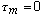

A set of command as been implemented into Gifa in order to permit the processing as described above. The set-up is such that these commands should be used in conjonction with the Lineara Prediction Module of Gifa. The processing should thus be performed on a build-up curve, held into the regular 1D area of Gifa. This build-up curve should be such as obtained with a set of NOESY spectra, obtained for various value of the mixing time [tau]m, regularly sampled from 0 to Tmax. It should be noted that the value for  is assumed to be present. However it is rarely usefull to measure this value, and it is preferable to insert a 0 value as the point of the build-up curve.
Build-up curve analysis thus starts as a regular 1D LP-SVD analysis. Commands
specific to the processing described above are the following :
RELAXRATE Permits to get the relaxation rate from the amplitude and the damping
factors, which are obtained by the multi-exponential analysis of the build-up
curve.
METH p Determine the hydrogen pair type. p is either 1, 2 or 3 for
hydrogen-hydrogen, hydrogen-methyl or methyl-methyl pairs.
DIST Performs the distance calculation from the relaxation rate, using a
reference distance, and the type of hydrogen pair observed.
CALIBDI dist_ref rate_ref Permits to define a reference rate, which corresponds
to a reference distance, a the motion model considered.
RCRYST n Performs the computation of a "crystallographic factor", between the
data obtained from the multi-exponential analysis and the initial data. This
factor is calculated from the first n curve points.
SLOPE n Performs a least-square fit on the n first curve points, to determine
his initial slope.
RTPIV [alpha] Performs the processing of the pairs of complexe conjugate roots,
which can be obtained when solving the PE polynomial. The roots found inside
the cone of extent [theta], are pivoted, those outside are removed: [alpha]=
cotan([theta]). Works only with forward roots.
The following internal variables are available :
$RELAX $RCRYST $CALIBDI[] $DIST
print"Calibration distance?" set dstcal = $_ print"Calibration relaxation rate?" set ratecal = $_
calibdi $dstcal $ratecal
print "Name of the build-up curve file?" set bldp = $_ print "Number of points on which the R-factor is computed?" set nb_pts_R = $_ print "Number of points on which initial-slope is computed?" set nb_pts_slop = $_ print "Order of the linear prediction analysis?" set ord = $_
read
$bldp ; read data file
reverse chsize +1 reverse ; add the first (null) point
slope $nb_pts_slop dist ; determine the distance
; by initial slope method
chsize *2 swa ; makes the data complex by iterleaving zeros
; (the Gifa linear prediction package
; processes only complexe data).
order $ord ; defines the order of the linear ; prediction analysis
dt->svd % svd->ar 2 ; calculates the AR coefficients
rtclean 2 rtinv 2 rtfreq % 1 ; PE root processing
rt->pk % 1 ; calculate the damping factors and the ; amplitudes
relaxrate ; calculate the relaxation rate
dist ; calculate the distance
rcryst $nb_pts_R ; calculate the crystallographic factor